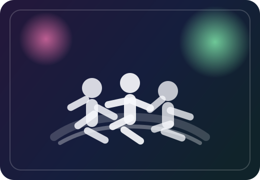
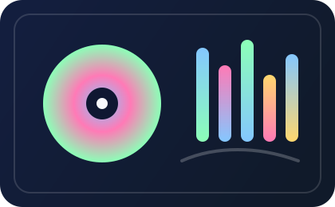
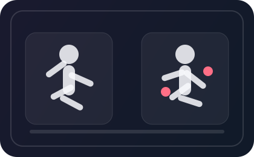

WEB DEMO SIMULATION
像舞台导演台一样，拆解每一段 K-Pop 舞蹈与音色
上传视频或音频，或者直接选择预设热门内容，体验舞台走位解析、音色识别、陪练纠错和舞步学习推荐。整个页面围绕“上台前准备、AI 分析、结果回看、继续练习”展开，更像一个真实可演示的产品控制台。



LIVE AI
Performance Console
支持模式4 大核心模块
推荐内容10 组预设样例
闭环能力分析 + 学习 + 收藏
1. 选择分析模式
舞蹈陪练纠错2. 内容上传与预设选择
未选择文件，将继续使用预设模拟数据。
推荐内容
3. AI 模拟分析过程
等待开始文件解析初始化
AI 特征提取
多模态结果生成
学习引导与归档
4. 结果可视化展示
分析结果会显示在这里
点击“开始 AI 分析”后，将根据模式生成走位图、饼图、对比建议或教学推荐。